Form Management¶
CitizenOne features a robust No-Code Form Builder that allows forms to be created without the need to write and deploy code. Forms can be attached a Service Card allowing citizens to complete and submit the form.
The list of all available Applications can be accessed by clicking [Form Builder] under the [Forms] tab of the sidebar.
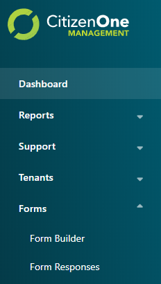{kind=link}
Viewing All Forms¶
The initial Form Builder page displays a list of all of the Forms that have been created for your instance of CitizenOne.
From this page, you are able to click on a Form in the list for a more detailed view, or create a new Form.
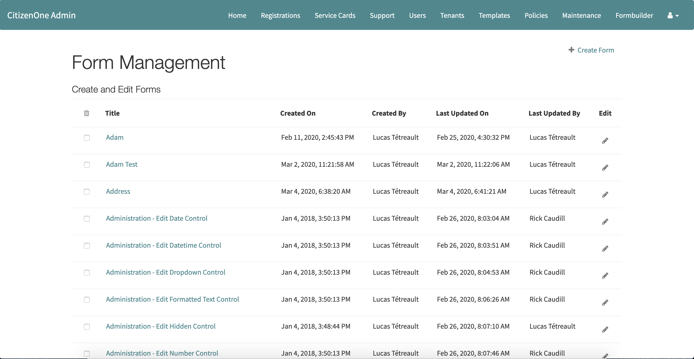{kind=link}
Creating Forms¶
When a new form needs to be created, click the [+ Create Form] button.
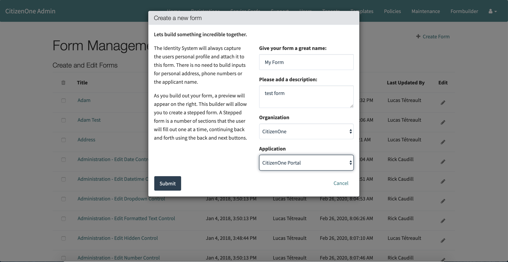{kind=link}
The fields in order to create a form are: 1. Name - The name of the form 2. Description - A brief description of the form 3. Organization - The Organization that the form belongs to 4. Application - The Application to tie it to in CitizenOne
Clicking the [Submit] button will take you to a page to create the content on the form.
Adding Controls (Fields) to the form¶
A control/field is how a user will enter information on the form. The current list of controls are:
Form Structure | Step | FormattedText
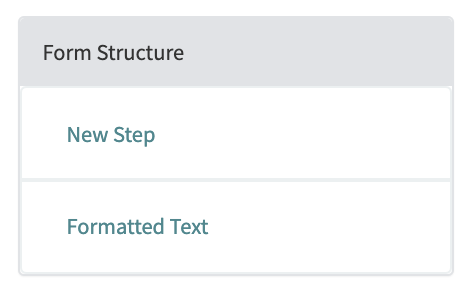{kind=link}
Text Controls | Input | Multi Line Input | Password
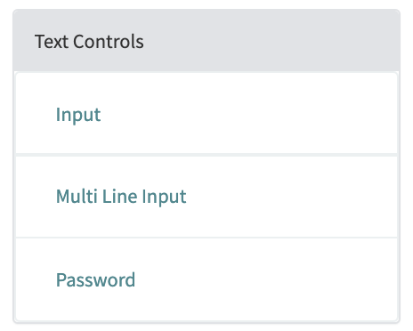{kind=link}
Typed Controls | Number | Email Address | Phone Number
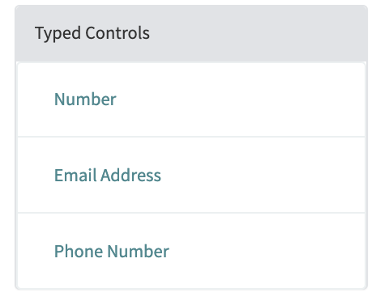{kind=link}
Date And Time Controls | Date | Type | Date and Time
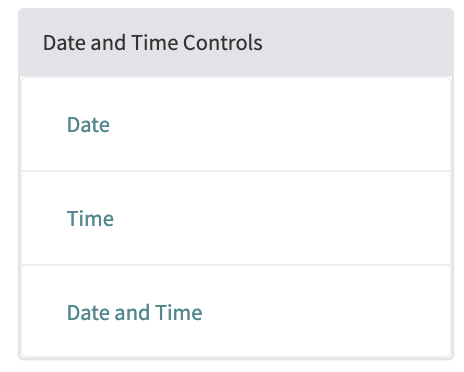{kind=link}
Selection Controls | Dropdown | Radio Buttons | Checkboxes | Yes/No Question
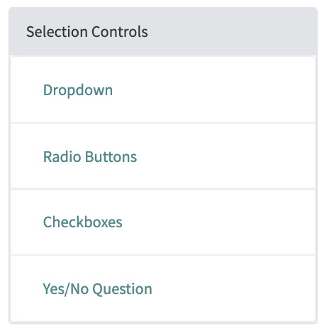{kind=link}
Buttons | Button | Link
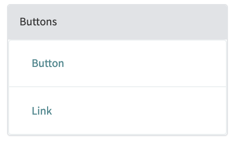{kind=link}
Speciality | QR Code | Hidden Field
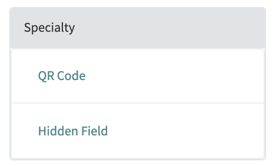{kind=link}
Adding controls to the forms happens when doing the following:
Creating a step. Forms in CitizenOne can be multi-step forms. So each Step in a form relates to a step in a form.
Adding Fields to the step.
Select control on a left side panel
Edit choosen control
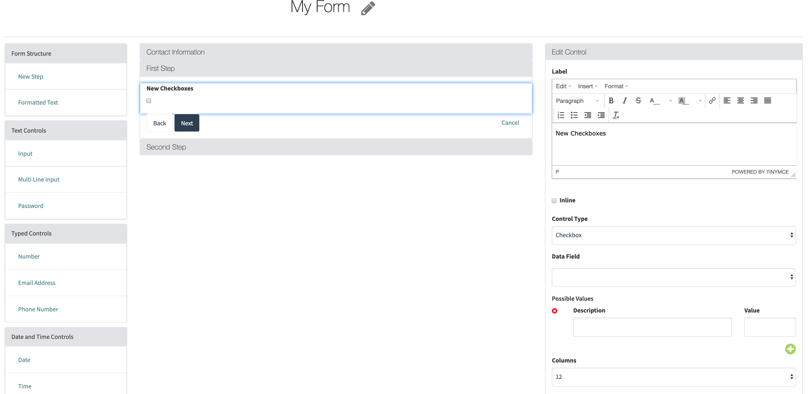
See the attributes for fields available here
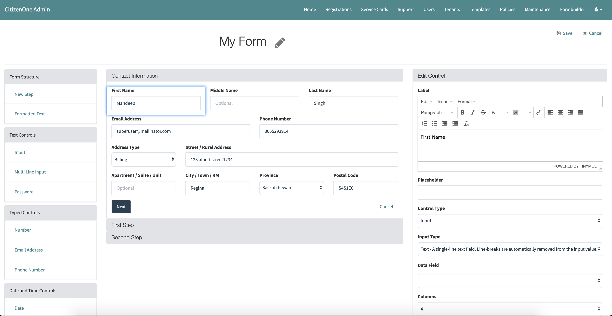 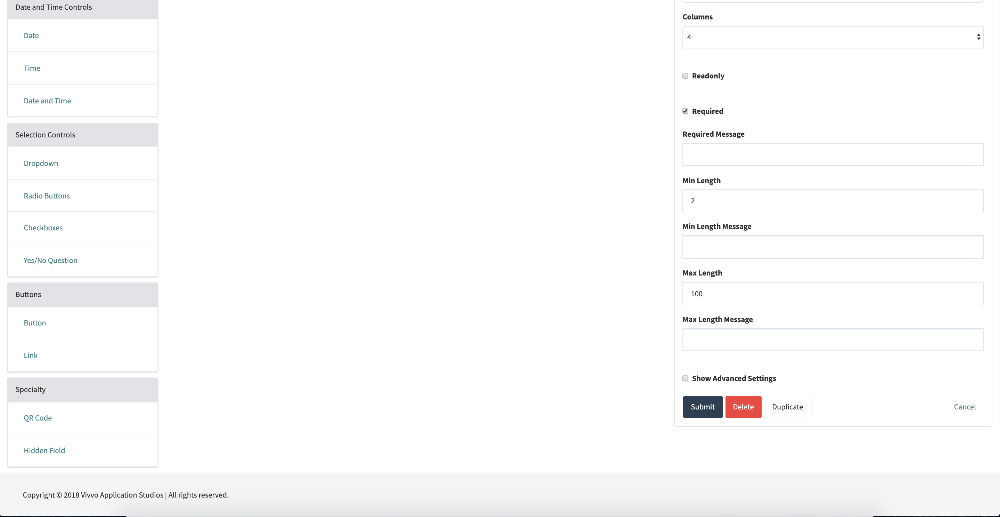Clicking the [Save] button.
Viewing Forms¶
Viewing forms happens on portal or on business server
{kind=link}